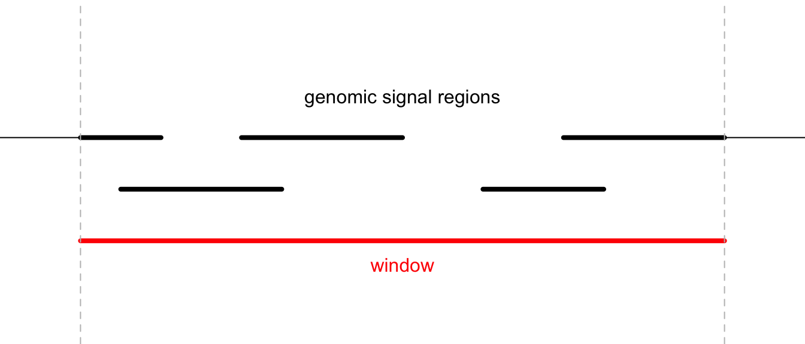
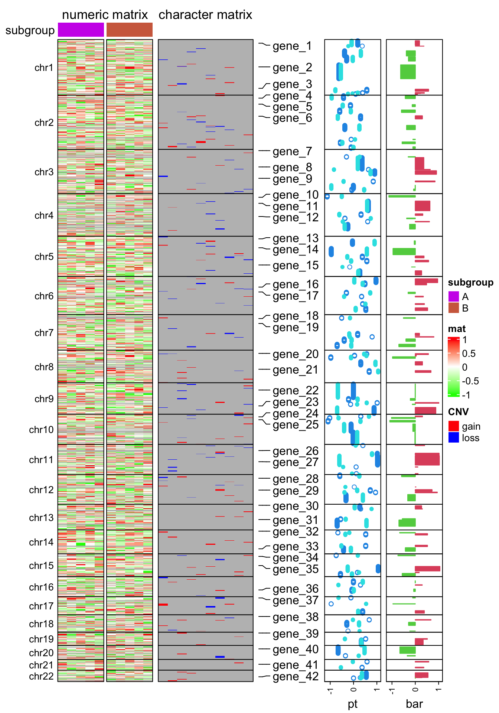
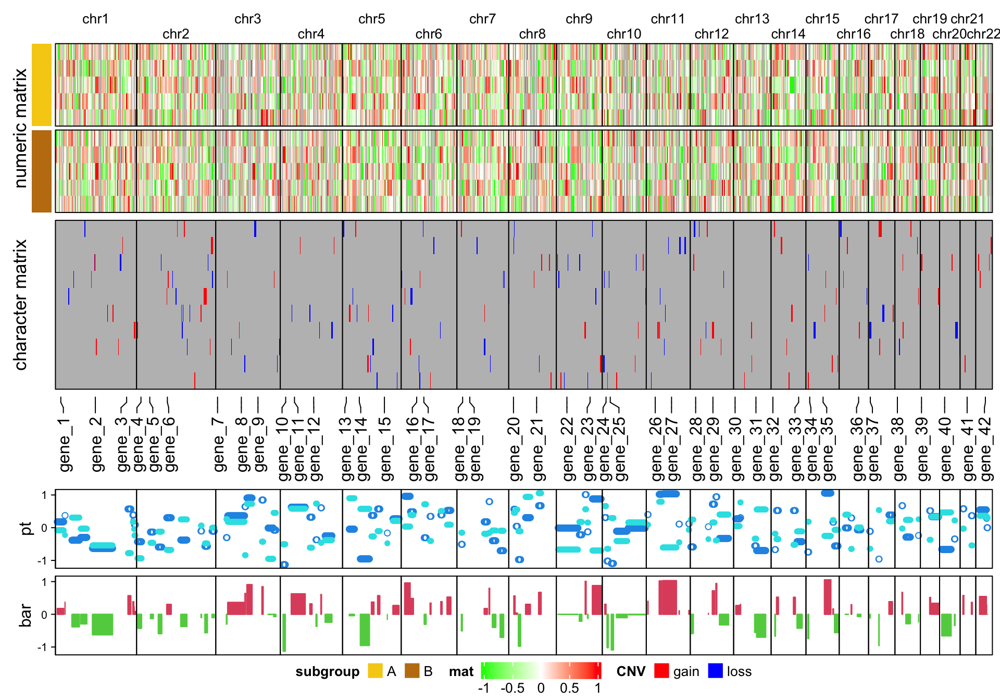

Chapter 13 Genome-level heatmap
Many people are interested in making genome-scale heatmap with multiple tracks, like examples here and here. In this chapter, I will demonstrate how to implement it with ComplexHeatmap.
{kind=link}
To make genome-scale plot, we first need the ranges on chromosome-level. There
are many ways to obtain this information. In following, I use
circlize::read.chromInfo() function.
library(circlize)
library(GenomicRanges)
chr_df = read.chromInfo()$df
chr_df = chr_df[chr_df$chr %in% paste0("chr", 1:22), ]
chr_gr = GRanges(seqnames = chr_df[, 1], ranges = IRanges(chr_df[, 2] + 1, chr_df[, 3]))
chr_gr## GRanges object with 22 ranges and 0 metadata columns:
## seqnames ranges strand
## <Rle> <IRanges> <Rle>
## [1] chr1 1-249250621 *
## [2] chr2 1-243199373 *
## [3] chr3 1-198022430 *
## [4] chr4 1-191154276 *
## [5] chr5 1-180915260 *
## ... ... ... ...
## [18] chr18 1-78077248 *
## [19] chr19 1-59128983 *
## [20] chr20 1-63025520 *
## [21] chr21 1-48129895 *
## [22] chr22 1-51304566 *
## -------
## seqinfo: 22 sequences from an unspecified genome; no seqlengthsIn the final heatmap, each row (if the genomic direction is vertical) or each
column (if the genomic direction is horizontal) actually represents a genomic
window, thus we need to split the genome with equal-width windows. Here I use
EnrichedHeatmap::makeWindows() function to split the genome by 1MB window
(The two meta-columns in chr_window can be ignored here).
library(EnrichedHeatmap)
chr_window = makeWindows(chr_gr, w = 1e6)
chr_window## GRanges object with 2875 ranges and 2 metadata columns:
## seqnames ranges strand | .i_query .i_window
## <Rle> <IRanges> <Rle> | <integer> <integer>
## [1] chr1 1-1000000 * | 1 1
## [2] chr1 1000001-2000000 * | 1 2
## [3] chr1 2000001-3000000 * | 1 3
## [4] chr1 3000001-4000000 * | 1 4
## [5] chr1 4000001-5000000 * | 1 5
## ... ... ... ... . ... ...
## [2871] chr22 46000001-47000000 * | 22 47
## [2872] chr22 47000001-48000000 * | 22 48
## [2873] chr22 48000001-49000000 * | 22 49
## [2874] chr22 49000001-50000000 * | 22 50
## [2875] chr22 50000001-51000000 * | 22 51
## -------
## seqinfo: 22 sequences from an unspecified genome; no seqlengthsTo visualize genome-scale signals as a heatmap as well as other tracks, now
the task is to calculate the average signals in the 1MB windows by overlapping
the genomic windows and the genomic signals. Here I implement a function
average_in_window(). This function is adapted from HilbertCurve
package since there is
similar task there.
average_in_window = function(window, gr, v, method = "weighted", empty_v = NA) {
if(missing(v)) v = rep(1, length(gr))
if(is.null(v)) v = rep(1, length(gr))
if(is.atomic(v) && is.vector(v)) v = cbind(v)
v = as.matrix(v)
if(is.character(v) && ncol(v) > 1) {
stop("`v` can only be a character vector.")
}
if(length(empty_v) == 1) {
empty_v = rep(empty_v, ncol(v))
}
u = matrix(rep(empty_v, each = length(window)), nrow = length(window), ncol = ncol(v))
mtch = as.matrix(findOverlaps(window, gr))
intersect = pintersect(window[mtch[,1]], gr[mtch[,2]])
w = width(intersect)
v = v[mtch[,2], , drop = FALSE]
n = nrow(v)
ind_list = split(seq_len(n), mtch[, 1])
window_index = as.numeric(names(ind_list))
window_w = width(window)
if(is.character(v)) {
for(i in seq_along(ind_list)) {
ind = ind_list[[i]]
if(is.function(method)) {
u[window_index[i], ] = method(v[ind], w[ind], window_w[i])
} else {
tb = tapply(w[ind], v[ind], sum)
u[window_index[i], ] = names(tb[which.max(tb)])
}
}
} else {
if(method == "w0") {
gr2 = reduce(gr, min.gapwidth = 0)
mtch2 = as.matrix(findOverlaps(window, gr2))
intersect2 = pintersect(window[mtch2[, 1]], gr2[mtch2[, 2]])
width_intersect = tapply(width(intersect2), mtch2[, 1], sum)
ind = unique(mtch2[, 1])
width_setdiff = width(window[ind]) - width_intersect
w2 = width(window[ind])
for(i in seq_along(ind_list)) {
ind = ind_list[[i]]
x = colSums(v[ind, , drop = FALSE]*w[ind])/sum(w[ind])
u[window_index[i], ] = (x*width_intersect[i] + empty_v*width_setdiff[i])/w2[i]
}
} else if(method == "absolute") {
for(i in seq_along(ind_list)) {
u[window_index[i], ] = colMeans(v[ind_list[[i]], , drop = FALSE])
}
} else if(method == "weighted") {
for(i in seq_along(ind_list)) {
ind = ind_list[[i]]
u[window_index[i], ] = colSums(v[ind, , drop = FALSE]*w[ind])/sum(w[ind])
}
} else {
if(is.function(method)) {
for(i in seq_along(ind_list)) {
ind = ind_list[[i]]
u[window_index[i], ] = method(v[ind], w[ind], window_w[i])
}
} else {
stop("wrong method.")
}
}
}
return(u)
}In average_in_window() function, there are following arguments:
window: AGRangesobject of the genomic windows.gr: AGRangesobject of the genomic signals.v: A vector or a matrix. This is the value associated withgrand it should have the same length ornrowasgr.vcan be numeric or character. If it ismissingorNULL, a value of one is assign to every region ingr. Ifvis numeric, it can be a vector or a matrix, and ifvis character, it can only be a vector.method: Method to summarize the signals for every genomic window.empty_v: The default value for the window if no region ingroverlaps to it.
The function returns a matrix with the same row length and order as window.
The overlapping model is illustrated in the following plot. The red line in the bottom represents a certain genomic window. Black lines on the top are the regions for genomic signals that overlap with the window. The thick lines indicate the intersected part between the signal regions and the window.

For a given window, \(n\) is the number of signal regions which overlap with the window (it is 5 in the above plot), \(w_i\) is the width of the intersected segments (black thick lines), and \(x_i\) is the signal value associated with the original regions.
If the signals are numeric, either as a vector or a matrix, there are three pre-defined methods:
The “absolute” method is denoted as \(v_a\) and is simply calculated as the mean of all signal regions regardless of their width.
\[ v_a = \frac{\sum_i^n{x_i}}{n} \]
The “weighted” method is denoted as \(v_w\) and is calculated as the mean of all signal regions weighted by the width of their intersections. This is the default method for numeric signals.
\[ v_w = \frac{\sum_i^n{x_iw_i}}{\sum_i^n{w_i}} \]
“Absolute” and “weighted” methods should be applied when background values should not be taken into consideration. For example, when summarizing the mean methylation in a small window, non-CpG background should be ignored, because methylation is only associated with CpG sites and not with other positions.
The “w0” method is the weighted mean between the intersected parts and un-intersected parts.
\[ v_{w0} = \frac{v_wW}{W+W'} \]
\(W\) is sum of width of the intersected parts (\(\sum_i^n{w_i}\)) and \(W'\) is the sum of width for the non-intersected parts.
If the signals are as a character vector, denote all levels encoded in \(x_i\) as \(A\) and a certain level of \(A\) is denoted as \(a\), the final value assigned to the window is the level of which the corresponding segments have the maximal sum of widths.
\[\underset{a\in A}{\operatorname{arg\,max}}\sum_{i}^n I(x_i=a)\cdot w_i\]
According to these rules, when the signal value v is numeric, the argumemt method
can be one of weighted (default), absolute and w0, and when v is character,
the value for method is ignored.
Besides the pre-defined values, method can also be a user-defined function and it works
both for numeric signals and character signals. The user-defined function should accept
three arguments: x, w and gw. This function is applied to every genomic window.
The three arguments are:
x: The signal values that fall in the genomic window (as shown in the previous plot).w: The associated segment widths.gw: The width of the current genomic window.
The user-defined function should only return a scalar variable.
OK, now with the function average_in_window(), I can convert the genomic
signals to a window-based matrix. In the following example, I generate
approximately 1000 random genomic regions with 10 columns of random values (to
simulate 10 samples).
bed1 = generateRandomBed(nr = 1000, nc = 10) # generateRandomBed() is from circlize package
# convert to a GRanes object
gr1 = GRanges(seqnames = bed1[, 1], ranges = IRanges(bed1[, 2], bed1[, 3]))
num_mat = average_in_window(chr_window, gr1, bed1[, -(1:3)])
dim(num_mat)## [1] 2875 10head(num_mat)## [,1] [,2] [,3] [,4] [,5] [,6]
## [1,] NA NA NA NA NA NA
## [2,] 0.3413166 0.15275069 0.19701329 -0.1214450 -0.3107540 -0.1489571
## [3,] -0.1351675 0.19905138 0.01566942 -0.1544065 0.5511997 0.7700131
## [4,] -0.1351675 0.19905138 0.01566942 -0.1544065 0.5511997 0.7700131
## [5,] -0.1351675 0.19905138 0.01566942 -0.1544065 0.5511997 0.7700131
## [6,] -0.1194236 -0.01403104 0.05271567 -0.1145400 0.5035536 0.7021175
## [,7] [,8] [,9] [,10]
## [1,] NA NA NA NA
## [2,] 0.1609441 -0.52637469 -0.08432468 -0.8291448
## [3,] -0.2314901 0.08101522 -0.20757957 0.4115715
## [4,] -0.2314901 0.08101522 -0.20757957 0.4115715
## [5,] -0.2314901 0.08101522 -0.20757957 0.4115715
## [6,] -0.1412650 0.05722741 -0.32152631 0.3933500The first five genomic windows have no value associated because no region in
gr1 overlaps to them, thus, they take the value from empty_v which is by
default NA.
The second data to visualize is 10 lists of genomic regions with character signals (let’s assume they are copy number variation results from 10 samples). In each random regions, I additionally sample 20 from them, just to make them sparse in the genome.
bed_list = lapply(1:10, function(i) {
generateRandomBed(nr = 1000, nc = 1,
fun = function(n) sample(c("gain", "loss"), n, replace = TRUE))
})
char_mat = NULL
for(i in 1:10) {
bed = bed_list[[i]]
bed = bed[sample(nrow(bed), 20), , drop = FALSE]
gr_cnv = GRanges(seqnames = bed[, 1], ranges = IRanges(bed[, 2], bed[, 3]))
char_mat = cbind(char_mat, average_in_window(chr_window, gr_cnv, bed[, 4]))
}The third data to visualize is simply genomic regions with two numeric columns where both columns will be visualized as a point track and the first column will be visualized as a barplot track.
bed2 = generateRandomBed(nr = 100, nc = 2)
gr2 = GRanges(seqnames = bed2[, 1], ranges = IRanges(bed2[, 2], bed2[, 3]))
v = average_in_window(chr_window, gr2, bed2[, 4:5])The fourth data to visualize is a list of gene symbols that we want to mark in
the plot. gr3 contains genomic positions for the genes as well as their
symbols. The variable at contains the row indice of the corresponding
windows in chr_window and labels contains the gene names. As shown in the
following code, I simply use findOverlaps() to associate gene regions to
genomic windows.
bed3 = generateRandomBed(nr = 40, nc = 0)
gr3 = GRanges(seqnames = bed3[, 1], ranges = IRanges(bed3[, 2], bed3[, 2]))
gr3$gene = paste0("gene_", 1:length(gr3))
mtch = as.matrix(findOverlaps(chr_window, gr3))
at = mtch[, 1]
labels = mcols(gr3)[mtch[, 2], 1]Now I have all the variables and are ready for making the heatmaps. Before doing that,
to better control the heatmap, I set chr as a factor to control the order of chromosomes
in the final plot and I create a variable subgroup to simulate the 10 columns in the matrix
for two subgroups.
chr = as.vector(seqnames(chr_window))
chr_level = paste0("chr", 1:22)
chr = factor(chr, levels = chr_level)
subgroup = rep(c("A", "B"), each = 5)The following code makes the heatmap with additional tracks. The plot is a combination of two heatmaps and three row annotations. Don’t be scared by the massive number of arguments. If you have been using ComplexHeatmap for more than a week, I believe you’ve already get used to it :).
library(ComplexHeatmap)
ht_opt$TITLE_PADDING = unit(c(4, 4), "points")
ht_list = Heatmap(num_mat, name = "mat", col = colorRamp2(c(-1, 0, 1), c("green", "white", "red")),
row_split = chr, cluster_rows = FALSE, show_column_dend = FALSE,
column_split = subgroup, cluster_column_slices = FALSE,
column_title = "numeric matrix",
top_annotation = HeatmapAnnotation(subgroup = subgroup, annotation_name_side = "left"),
row_title_rot = 0, row_title_gp = gpar(fontsize = 10), border = TRUE,
row_gap = unit(0, "points")) +
Heatmap(char_mat, name = "CNV", col = c("gain" = "red", "loss" = "blue"),
border = TRUE, column_title = "character matrix") +
rowAnnotation(label = anno_mark(at = at, labels = labels)) +
rowAnnotation(pt = anno_points(v, gp = gpar(col = 4:5), pch = c(1, 16)),
width = unit(2, "cm")) +
rowAnnotation(bar = anno_barplot(v[, 1], gp = gpar(col = ifelse(v[ ,1] > 0, 2, 3))),
width = unit(2, "cm"))
draw(ht_list, merge_legend = TRUE)
It is easy to make the arrangement of heatmaps vertical (use %v% to concatenate
heatmaps!). Just carefully switch the row-related parameters and
column-related parameters. Here I additinally adjust the legends to make them
look nicer in the plot.
Note I use a trick to arrange the chromosome names. Since the chromosome names will
overlap for small chromosomes, I simply add \n before or after for the neighbour chromosome names
(see how I set column_title argument in the first heatmap).
ht_list = Heatmap(t(num_mat), name = "mat", col = colorRamp2(c(-1, 0, 1), c("green", "white", "red")),
column_split = chr, cluster_columns = FALSE, show_row_dend = FALSE,
row_split = subgroup, cluster_row_slices = FALSE,
row_title = "numeric matrix",
left_annotation = rowAnnotation(subgroup = subgroup, show_annotation_name = FALSE,
annotation_legend_param = list(
subgroup = list(direction = "horizontal", title_position = "lefttop", nrow = 1))),
column_title_gp = gpar(fontsize = 10), border = TRUE,
column_gap = unit(0, "points"),
column_title = ifelse(1:22 %% 2 == 0, paste0("\n", chr_level), paste0(chr_level, "\n")),
heatmap_legend_param = list(direction = "horizontal", title_position = "lefttop")) %v%
Heatmap(t(char_mat), name = "CNV", col = c("gain" = "red", "loss" = "blue"),
border = TRUE, row_title = "character matrix",
heatmap_legend_param = list(direction = "horizontal", title_position = "lefttop", nrow = 1)) %v%
HeatmapAnnotation(label = anno_mark(at = at, labels = labels, side = "bottom")) %v%
HeatmapAnnotation(pt = anno_points(v, gp = gpar(col = 4:5), pch = c(1, 16)),
annotation_name_side = "left", height = unit(2, "cm")) %v%
HeatmapAnnotation(bar = anno_barplot(v[, 1], gp = gpar(col = ifelse(v[ ,1] > 0, 2, 3))),
annotation_name_side = "left", height = unit(2, "cm"))
draw(ht_list, heatmap_legend_side = "bottom", merge_legend = TRUE)